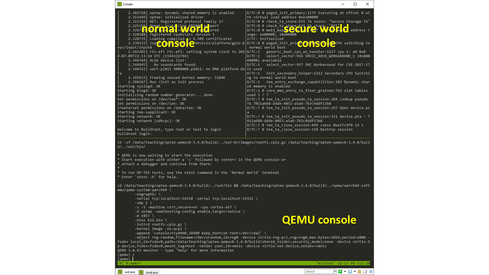
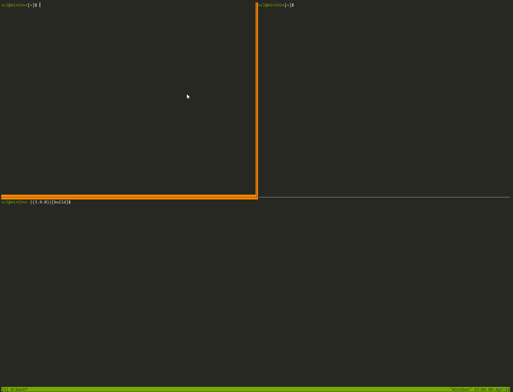

Run nc instances on servers
This is for students who cannot get local X server to work
On server:
Adjust the makefile build/qemu_v8.mk
Comment out the lines that call terminal as below:
run-only:
ln -sf $(ROOT)/out-br/images/rootfs.cpio.gz $(BINARIES_PATH)/
$(call check-terminal)
$(call run-help)
# $(call launch-terminal,54320,"Normal World")
# $(call launch-terminal,54321,"Secure World")
# $(call wait-for-ports,54320,54321)
cd $(BINARIES_PATH) && $(QEMU_PATH)/aarch64-softmmu/qemu-system-aarch64 \
-nographic \
-serial tcp:localhost:50324 -serial tcp:localhost:50323 \
-smp $(QEMU_SMP) \
-S -machine virt,secure=on -cpu cortex-a57 \
-d unimp -semihosting-config enable,target=native \
-m 1057 \
-bios bl1.bin \
-initrd rootfs.cpio.gz \
-kernel Image -no-acpi \
-append 'console=ttyAMA0,38400 keep_bootcon root=/dev/vda2' \
$(QEMU_EXTRA_ARGS)
Run netcat (nc)
Since Sp23, we provide env.sh to automate the following.
cd optee-qemuv8
source env.sh
On two separate terminals (we recommend to use tmux panes):
p3-console-normal
Then
p3-console-sec
Explanation: the two commands will run two nc to listen on two random ports, which connect to consoles for normal & secure worlds of the ARM system emulated by QEMU, respectively. Something like:
$ nc -l 127.0.0.1 50324
ON A DIFFERENT TERMINAL:
$ nc -l 127.0.0.1 50323
NOTE on nc:
- nc has slight variations in its command line syntax. If you run into issues, see here.
- nc terminates whenever you exit QEMU. If you nc to restart automatically to be ready for the next QEMU launch:
$ while true; do nc -l 127.0.0.1 50324; done
YOU MUST HAVE THE TWO nc instances running already. Then:
p3-run-noxterm
Here is my window (running tmux) split in three ways. WATCH THE GIF ANIMATION CAREFULLY.


That's it!